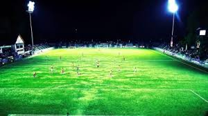
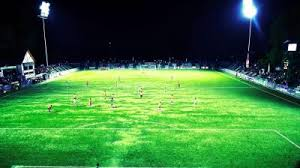
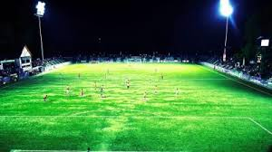

This is the official website of iiit manipur football club. We want to tell us about our selef somethings. A football club is different from any other business entity. The stakeholders, in this case are the fans. The fans' investment is their support, while their return comes in the form of the emotional gratification all football fans desire, be it through chasing promotion, surviving relegation or a cup run. In order to guarantee this return, all a football club needs to do is exist. While sounding straightforward, Southend United are one of a number of clubs whose very existence has been threatened, and whose future is only guaranteed by the goodwill or otherwise of the judiciary. Without the existence of the club, the fans will not receive the return their investment deserves.
Despite this clear difference, in order to guarantee the future of all football clubs, the worlds of football and business have to work together. For too long, football clubs have not followed the basic principles of running any successful business. When I was chairman of Southend United, I applied four basic principles that I still use today in varying guises to run a successful business.
Firstly, employ a manager who knows what he is doing. Secondly, unless absolutely necessary, do not sack him — continuity breeds success and it allows a good manager to buy into and develop an idea. Thirdly, use all income generated to run the club — players need to be paid fairly and on time, while bills (in particular local businesses, and Southend United's current nemesis, HMRC) must also be paid promptly. Fourthly, to generate further income, assets must be made to "sweat". In the case of the football club this, for example, includes ensuring the most is made through shirt sponsorship opportunities and corporate sales (all, of course, while ensuring all fans who want to support the club are not priced out of doing so).
GROUND
 A football pitch (also known as a football field[1] or soccer field) is the playing surface for the game of association football. Its dimensions and markings are defined by Law 1 of the Laws of the Game, "The Field of Play".[2] The pitch is typically made of natural turf or artificial turf, although amateur and recreational teams often play on dirt fields. Artificial surfaces must be green in colour.All line markings on the pitch form part of the area which they define. For example, a ball on or above the touchline is still on the field of play, and a foul committed over the line bounding the penalty area results in a penalty. Therefore, a ball must completely cross the touchline to be out of play, and a ball must wholly cross the goal line (between the goal posts) before a goal is scored; if any part of the ball is still on or above the line, the ball is still in play.
Practices Tutorial
TEAM
Player name
Postion
Rating
Aryan Bisht
CB
100
Aman
CB
98
Mainsh Kumar
CF
96
Himanshu
GK
99
Rajat
GK
92
Gireesh
GK
95
Shaswat Mund
CF
90
Ayush
CM
87
Piyush
LM
67
monal
LB
94
Mandeep
RM
92
Swaastik
CM
86
Pawan
LB
81
Shanshank
RB
98
Vilash
LM
92
Adesh
LM
81
Mukul
CB
80
Gatuam
CF
85
PLAYING STYLE.
The 4-3-3 is set out in three lines on the pitch - a typical defence of two centre-backs and two full-backs, three central midfielders who may form a triangle and three strikers, one central and two who play on the flanks Key to this formation are the wide forwards, that flank the lone central striker. These players are all-round attacking players with pace and shooting ability, who use their speed on the wings before cutting in towards goal. Cristiano Ronaldo is the outstanding example. The lone striker himself may be a powerful target man or someone who drops deep to drag defenders away and leave space for the wide forwards, in the famous ´False 9´ style of Lionel Messi .These strikers are aided by at least two of the central midfielders. Those central midfielders form a tight triangle in the middle of the pitch and often fall into the roles of ‘creator-destroyer-passer', to attack, defend and maintain possession. Some midfielders combine all of those elements but a well-balanced midfield is key to the formation.With a compact central midfield, the full-backs can also join the attack and use huge amounts of space due to the high positioning of the wide forwards.ProsThe 4-3-3 is arguably the most potentially overwhelming of all modern formations. There's a reason why many of the most dominant sides of European football - Chelsea, Real Madrid, Barcelona - use it. These are the sides that expect a win each week, with enough offensive power to overcome sides determined to leave with a draw.
In possession, the 4-3-3 allows at least 7 players to attack, as the wide forwards squeeze the defence, the full-backs come up behind them and two of the central midfielders push forward.However the special quality of a good 4-3-3 is the strangling quality it brings. This comes from combining two elements, a three man central midfield which can dominate possession via passing triangles and three strikers who can press high up the pitch. Opponents find it hard to get the ball and hard to keep it. Midfielders can´t get a hold of the ball and are pressured quickly when they do. The defenders are faced with three men pressing them and there are no easy balls to the wings when the full-backs push up.A fully-functioning offensive 4-3-3 is like the tide against a sandcastle - it might take a while, but it's gonna break through the defences eventually. And there has never been a 4-3-3 that functioned better than the Barcelona side of 2008-09 under Pep Guardiola in his first season, treble winners who dominated Manchester United in the Champions League final and Real Madrid in the league..
  A football pitch (also known as a football field[1] or soccer field) is the playing surface for the game of association football. Its dimensions and markings are defined by Law 1 of the Laws of the Game, "The Field of Play".[2] The pitch is typically made of natural turf or artificial turf, although amateur and recreational teams often play on dirt fields. Artificial surfaces must be green in colour.All line markings on the pitch form part of the area which they define. For example, a ball on or above the touchline is still on the field of play, and a foul committed over the line bounding the penalty area results in a penalty. Therefore, a ball must completely cross the touchline to be out of play, and a ball must wholly cross the goal line (between the goal posts) before a goal is scored; if any part of the ball is still on or above the line, the ball is still in play.
 A football pitch (also known as a football field[1] or soccer field) is the playing surface for the game of association football. Its dimensions and markings are defined by Law 1 of the Laws of the Game, "The Field of Play".[2] The pitch is typically made of natural turf or artificial turf, although amateur and recreational teams often play on dirt fields. Artificial surfaces must be green in colour.All line markings on the pitch form part of the area which they define. For example, a ball on or above the touchline is still on the field of play, and a foul committed over the line bounding the penalty area results in a penalty. Therefore, a ball must completely cross the touchline to be out of play, and a ball must wholly cross the goal line (between the goal posts) before a goal is scored; if any part of the ball is still on or above the line, the ball is still in play.  The 4-3-3 is set out in three lines on the pitch - a typical defence of two centre-backs and two full-backs, three central midfielders who may form a triangle and three strikers, one central and two who play on the flanks Key to this formation are the wide forwards, that flank the lone central striker. These players are all-round attacking players with pace and shooting ability, who use their speed on the wings before cutting in towards goal. Cristiano Ronaldo is the outstanding example. The lone striker himself may be a powerful target man or someone who drops deep to drag defenders away and leave space for the wide forwards, in the famous ´False 9´ style of Lionel Messi .These strikers are aided by at least two of the central midfielders. Those central midfielders form a tight triangle in the middle of the pitch and often fall into the roles of ‘creator-destroyer-passer', to attack, defend and maintain possession. Some midfielders combine all of those elements but a well-balanced midfield is key to the formation.With a compact central midfield, the full-backs can also join the attack and use huge amounts of space due to the high positioning of the wide forwards.ProsThe 4-3-3 is arguably the most potentially overwhelming of all modern formations. There's a reason why many of the most dominant sides of European football - Chelsea, Real Madrid, Barcelona - use it. These are the sides that expect a win each week, with enough offensive power to overcome sides determined to leave with a draw.
In possession, the 4-3-3 allows at least 7 players to attack, as the wide forwards squeeze the defence, the full-backs come up behind them and two of the central midfielders push forward.However the special quality of a good 4-3-3 is the strangling quality it brings. This comes from combining two elements, a three man central midfield which can dominate possession via passing triangles and three strikers who can press high up the pitch. Opponents find it hard to get the ball and hard to keep it. Midfielders can´t get a hold of the ball and are pressured quickly when they do. The defenders are faced with three men pressing them and there are no easy balls to the wings when the full-backs push up.A fully-functioning offensive 4-3-3 is like the tide against a sandcastle - it might take a while, but it's gonna break through the defences eventually. And there has never been a 4-3-3 that functioned better than the Barcelona side of 2008-09 under Pep Guardiola in his first season, treble winners who dominated Manchester United in the Champions League final and Real Madrid in the league..
The 4-3-3 is set out in three lines on the pitch - a typical defence of two centre-backs and two full-backs, three central midfielders who may form a triangle and three strikers, one central and two who play on the flanks Key to this formation are the wide forwards, that flank the lone central striker. These players are all-round attacking players with pace and shooting ability, who use their speed on the wings before cutting in towards goal. Cristiano Ronaldo is the outstanding example. The lone striker himself may be a powerful target man or someone who drops deep to drag defenders away and leave space for the wide forwards, in the famous ´False 9´ style of Lionel Messi .These strikers are aided by at least two of the central midfielders. Those central midfielders form a tight triangle in the middle of the pitch and often fall into the roles of ‘creator-destroyer-passer', to attack, defend and maintain possession. Some midfielders combine all of those elements but a well-balanced midfield is key to the formation.With a compact central midfield, the full-backs can also join the attack and use huge amounts of space due to the high positioning of the wide forwards.ProsThe 4-3-3 is arguably the most potentially overwhelming of all modern formations. There's a reason why many of the most dominant sides of European football - Chelsea, Real Madrid, Barcelona - use it. These are the sides that expect a win each week, with enough offensive power to overcome sides determined to leave with a draw.
In possession, the 4-3-3 allows at least 7 players to attack, as the wide forwards squeeze the defence, the full-backs come up behind them and two of the central midfielders push forward.However the special quality of a good 4-3-3 is the strangling quality it brings. This comes from combining two elements, a three man central midfield which can dominate possession via passing triangles and three strikers who can press high up the pitch. Opponents find it hard to get the ball and hard to keep it. Midfielders can´t get a hold of the ball and are pressured quickly when they do. The defenders are faced with three men pressing them and there are no easy balls to the wings when the full-backs push up.A fully-functioning offensive 4-3-3 is like the tide against a sandcastle - it might take a while, but it's gonna break through the defences eventually. And there has never been a 4-3-3 that functioned better than the Barcelona side of 2008-09 under Pep Guardiola in his first season, treble winners who dominated Manchester United in the Champions League final and Real Madrid in the league..